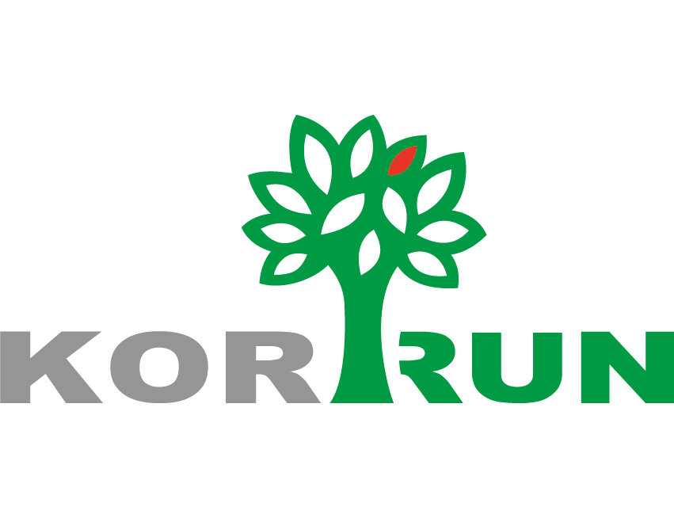

OA 审批 AI 助手隐私说明
生效日期：2026 年 10 月 30 日 · 发布者：Korrun
本扩展面向有权使用公司 OA 的员工，用于付款预审。首次使用须在扩展中明确同意；随后选择预审技能才开始读取业务字段、附件和外部辅助审核。最终审批由人工决定。
处理哪些数据
- 当前 OA 单据的流程号、表单字段、明细、付款公司与供应商、金额、附件名称，以及完成预审所需的附件内容和关联流程证据。
- 审核结果、建议、规则清单、表单快照、发起人信息、审核时间、版本与安全诊断。资料可能含姓名、公司信息、财务与付款信息，应确保你有权处理。
- 本机的同意记录和审核结果缓存。扩展不要求提供 OA 密码；现有 OA 登录态仅用于按你的权限访问 OA，不作为 AI 或 OCR 的输入发送。
数据发送到哪里、用于什么
- 公司后端 https://oaai.czfac.cn：接收预审所需表单/附件，执行规则、解析、识别及审核记录保存。扩展向公司后端的业务请求使用 HTTPS。
- DeepSeek API：根据表单和已读取附件正文提供付款语义审核建议。
- 百度 OCR：识别图片、扫描或图文 PDF、Office 内嵌图片及必要合同印章证据。原始识别材料会传给该服务。
- Bing、360公开搜索：联网比价时接收从采购材料提取的商品名称、品牌、型号及规格，返回公开销售网页线索；不把申请人、公司、流程号、采购价格或合同全文作为搜索词。公司后端随后访问公开商品页，核对可比报价；不向这些网站发送OA登录凭据或附件。
- 上述传输仅用于你选择的预审功能。发布者不出售业务数据，不将其用于广告或另行训练通用模型。第三方 API 的处理与留存还受其服务条款约束，本扩展不承诺供应商固定保留天数。
供应商资料：DeepSeek 开放平台条款、百度智能云隐私政策。公司应按其允许的数据范围使用这些服务。
保存方式与期限
本扩展使用及转移从 Google API 获取的信息时，将遵守 Chrome Web Store 用户数据政策，包括其中的有限使用（Limited Use）要求。浏览器页面数据仅用于本说明所列预审用途，不用于广告、出售或信用评级。
- 本机使用 Chrome 本地存储缓存最新审核结果，最多 100 条，最长 30 天，总量不超过 2 MiB；到期记录不再用于复用，并在访问缓存时清理。审核缓存不使用 Chrome 同步存储。
- 本机缓存不保存附件原始字节、base64、完整 OCR 正文或审核写入凭据；OA 文件标识以指纹保存。表单快照和审核建议仍可能包含财务与个人信息。
- 公司服务器保存审核快照、清单、建议和诊断，不在审核数据库保存附件原始字节、base64或完整 OCR 正文。Office 转换仅在受保护临时目录处理，完成或失败后清理。
- 联网比价保存商品及单价、可比报价、来源链接、查询时间与判断依据，不保存抓取的完整商品网页或提取时的业务正文。报价作为当时公开参考，超过30分钟不再直接复用来判断当前价格。
- 服务器审核记录当前不自动到期删除，由管理员按业务审计与实际留存要求管理。关闭扩展或清除本机缓存不会删除已形成的服务器审计记录。
- 服务器、反向代理和外部服务可能保留必要的运行与安全日志。扩展不会通过公开流程号查询接口向其他用户展示服务器历史记录。
你的选择
你可在首次说明中选择“暂不使用”，继续原生 OA 操作。在扩展的“详情 → 扩展程序选项 → 数据与隐私”中，可撤回同意并清除本机审核缓存。撤回后不再发起新的业务外传；已经发送的请求无法撤销，服务器审计记录按上述要求管理。
如需查阅、更正或申请删除相关记录，请联系发布者。管理员会核实身份、权限和业务留存要求后处理；请勿在普通邮件中发送密码、验证码或完整审批附件。
说明更新
如数据类型、目的或处理方式变化，会更新本说明及扩展内提示。需要重新同意的变化将使旧同意版本失效，未同意前不会继续业务外传。